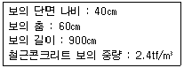
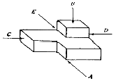
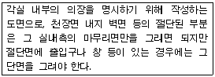
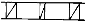
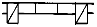
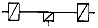

전산응용건축제도기능사 (2004-10-10 기출문제)
1과목: 건축구조
1. 2층마루의 구조상 분류에 속하지 않는 것은?
- 홑마루
- 보마루
- 짠마루
- 납작마루
(정답률: 53%)

2. 철근콘크리트기둥의 배근에 관한 기술 중 옳지 않은 것은?
- 원형 기둥에서 기둥을 보강하는 세로철근, 즉 축방향 철근이 주근이고, 그 주위에 나선형으로 둘러감은 것을 나선철근이라 한다.
- 주근의 이음위치는 층높이의 1/2 하부에 두고 한자리에서 2/3 이상을 잇지 아니한다.
- 기둥 하부의 주근은 기초에 정착한다.
- 사각형 기둥에서는 주근을 4개 이상 사용한다.
(정답률: 62%)
3. 벽돌구조의 아치(arch)는 부재의 하부에 다음 중 어떤 힘이 생기지 않게 된 구조인가?
- 압축력
- 인장력
- 직압력
- 수직력
(정답률: 64%)
4. 철근콘크리트 슬래브에 관한 설명 중 옳지 않은 것은?
- 두께는 최소 12㎝ 이상으로 한다.
- 단변방향의 철근 간격은 20㎝ 이하로 한다.
- 장변방향의 철근 간격은 30㎝ 이하로 한다.
- 슬래브의 인장철근은 D10 이상을 사용한다.
(정답률: 44%)
5. 철근콘크리트구조의 특징이 아닌 것은?
- 내풍, 내진성이 크다.
- 시공이 간편하며 균열이 쉽게 발생되지 않는다.
- 설계가 비교적 자유롭다.
- 콘크리트의 성질이 알칼리성으로 철근의 부식을 막아 주므로 내구성이 크다.
(정답률: 45%)
6. 벽돌 구조에서 방음, 단열, 방습을 위해 벽돌벽을 이중으로 하고 중간을 띄어 쌓는 법은?
- 들여쌓기
- 공간쌓기
- 내쌓기
- 기초쌓기
(정답률: 89%)
7. 벽돌조 공간쌓기에서 연결재의 수평거리는 최대 얼마 이하로 하여야 하는가?
- 45㎝
- 60㎝
- 75㎝
- 90㎝
(정답률: 41%)
8. 다음 중 여닫이 창호에 쓰이는 철물이 아닌 것은?
- 도어클로저
- 경첩
- 레일
- 함자물쇠
(정답률: 70%)
9. 아치벽돌을 특별히 주문 제작하여 만든 아치는?
- 층두리아치
- 거친아치
- 막만든아치
- 본아치
(정답률: 74%)
10. 대린벽으로 구획된 길이 8m의 벽돌벽에 창문을 내려고 할 때 창문을 낼 수 있는 최대 나비는?
- 2m
- 3m
- 4m
- 5m
(정답률: 73%)
11. 채광만을 목적으로 하고 환기를 할 수 없는 밀폐된 창은?
- 미서기창
- 오르내리창
- 붙박이창
- 미닫이창
(정답률: 84%)
12. 지반이 연약하거나 기둥에 작용하는 하중이 커서 기초판이 넓어야 할 때 사용하는 기초로 건물의 하부 전체 또는 지하실 전체를 하나의 기초판으로 구성한 것은?
- 독립기초
- 줄기초
- 복합기초
- 온통기초
(정답률: 84%)
13. 한식 건축에서 추녀뿌리를 받치는 기둥의 명칭은?
- 평기둥
- 누주
- 활주
- 통재기둥
(정답률: 60%)
14. 목구조에서 깔도리와 처마도리를 고정시켜 주는 철물은?
- 주걱볼트
- 달대공
- 띠쇠
- 꺽쇠
(정답률: 51%)
15. 블록구조의 종류 중 블록의 빈 속에 철근과 모르타르를 부어 넣은 것으로서 수직하중, 수평하중에 견딜 수 있는 구조는?
- 조적식 블록조
- 보강 블록조
- 장막벽 블록조
- 거푸집 블록조
(정답률: 66%)
16. 철근의 정착에 대한 설명으로 옳은 것은?
- 정착길이는 철근의 항복강도가 클수록 길어진다.
- 정착길이는 콘크리트 강도가 클수록 길어진다.
- 정착길이는 항상 20㎝ 이하로 한다.
- 정착길이는 철근의 지름과는 무관하다.
(정답률: 38%)
17. 다음과 같은 조건일 경우 철근콘크리트 보의 중량은?

- 5184 tf
- 518.4 tf
- 51.84 tf
- 5.184 tf
(정답률: 40%)
18. 철근콘크리트 기둥의 최소단면적은 몇 ㎠ 인가?
- 200
- 400
- 600
- 800
(정답률: 59%)
19. 다음 중 부동침하의 원인과 가장 관계가 먼 것은?
- 이질 지정을 하였을 경우
- 일부 지정을 하였을 경우
- 건물을 경량화 하였을 경우
- 지반이 연약한 경우
(정답률: 79%)
20. 다음 중 창호 재료종류별 기호로 옳지 않은 것은?
- G - 유리
- W - 목재
- A - 알루미늄
- P - 철재
(정답률: 77%)
2과목: 건축재료
21. 석재의 용도에 관한 기술 중 부적당한 것은?
- 화강암 - 외장재
- 점판암 - 지붕재
- 석회암 - 구조재
- 대리석 - 실내장식재
(정답률: 64%)
22. 합판의 특징에 대한 설명 중 옳지 않은 것은?
- 섬유방향이 서로 직각되게 단판을 짝수 붙임하여 제작한다.
- 함수율 변화에 따른 팽창, 수축의 방향성이 없다.
- 뒤틀림이나 변형이 적은 비교적 큰 면적의 평면재료를 얻을 수 있다.
- 균일한 강도의 재료를 얻을 수 있다.
(정답률: 42%)
23. 어느 목재의 절대건조비중이 0.54일 때 목재의 공극율은 얼마인가?(오류 신고가 접수된 문제입니다. 반드시 정답과 해설을 확인하시기 바랍니다.)
- 약 65%
- 약 54%
- 약 35%
- 약 46%
(정답률: 42%)
24. 모자이크타일의 재질로 가장 좋은 것은?
- 토기질
- 자기질
- 석기질
- 도기질
(정답률: 65%)
25. 청동에 대한 설명으로 옳지 않은 것은?
- 구리와 주석과의 합금이다.
- 황동보다 내식성이 작으며 주조하기가 어렵다.
- 청동에 속하는 포금은 약간의 아연, 납을 포함한 구리 합금이다.
- 표면은 특유의 아름다운 청록색으로 되어 있어 장식철물, 공예재료 등에 많이 쓰인다.
(정답률: 49%)
26. 금속의 방식법에 대한 설명 중 옳지 않은 것은?
- 도료나 내식성이 큰 금속으로 표면에 피막을 하여 보호한다.
- 균질한 재료를 사용한다.
- 다른 종류의 금속을 서로 잇대어 사용한다.
- 표면은 깨끗하게 하고 물기나 습기가 없도록 한다.
(정답률: 77%)
27. 아스팔트의 용도로서 가장 적합치 못한 것은?
- 도로포장 재료
- 녹막이 재료
- 방수 재료
- 보온, 보냉 재료
(정답률: 59%)
28. 유리섬유로 보강한 섬유보강 플라스틱으로서 일명 F.R.P라 불리어지는 제품을 만드는 합성수지는?
- 아크릴 수지
- 폴리에스테르 수지
- 실리콘 수지
- 에폭시 수지
(정답률: 69%)
29. 다음은 구조재료에 요구되는 성질을 설명한 것이다. 틀린 것은?
- 재질이 균일하여야 한다.
- 강도가 큰 것이어야 한다.
- 탄력성이 있고 자중이 커야 한다.
- 가공이 용이한 것이어야 한다.
(정답률: 65%)
30. 다음 건축재료 중 천연 재료에 속하는 것은?
- 목재
- 철근
- 유리
- 고분자재료
(정답률: 82%)
31. 콘크리트에서 물시멘트비란?
- 물의용적/시멘트용적
- 시멘트용적/물의용적
- 물의중량/시멘트중량
- 시멘트중량/물의중량
(정답률: 55%)
32. 표준형 점토 벽돌의 크기는 ? (단, 단위는 mm)
- 190× 90× 57
- 190× 90× 60
- 210× 100× 57
- 210× 100× 60
(정답률: 83%)
33. 1종 점토벽돌의 압축강도는 얼마 이상이어야 하는가? ( 단위: kgf/㎠)
- 110
- 160
- 210
- 260
(정답률: 68%)
34. 콘크리트 배합에 사용되는 물에 대한 설명으로 옳지 않은 것은?
- 산성이 강한 물을 사용하면 콘크리트의 강도가 증가한다.
- 기름, 알칼리, 그 밖에 유기물이 포함된 물은 사용하지 않는 것이 좋다.
- 당분은 시멘트 무게의 0.1~0.2%가 함유되어도 응결이 늦고, 그 이상이면 강도도 떨어진다.
- 염분은 철근 부식의 원인이 되므로 철근 콘크리트에는 사용하지 않는 것이 좋다.
(정답률: 76%)
35. 열경화성 수지에 해당되는 것은?
- 멜라민 수지
- 염화비닐 수지
- 메타크릴 수지
- 폴리에틸렌 수지
(정답률: 36%)
36. 콘크리트에 대한 설명으로 맞는 것은?
- 현대건축에서는 구조용 재료로 거의 사용하지 않는다
- 압축 강도는 크지만 내화성이 약하다.
- 철근, 철골 등과 접착성이 우수하다.
- 무게가 무겁고 인장 강도가 크다.
(정답률: 63%)
37. 콘크리트의 경량, 단열, 내화성 등을 목적으로 사용되며 ALC의 제조에도 이용되는 혼화제는?
- AE제
- 감수제
- 방수제
- 기포제
(정답률: 34%)
38. 속이 빈 상자 모양의 유리 2개를 맞대어 저압 공기를 넣고 녹여 붙인 것으로 방음, 보온효과가 크며 장식효과도 얻을 수 있는 유리 제품은?
- 유리 블록
- 자외선 투과 유리
- 폼 글라스
- 유리 섬유
(정답률: 61%)
39. 수화열이 작고 단기강도가 보통 포틀랜드 시멘트보다 작으나 내침식성과 내수성이 크고 수축률도 매운 작아서 댐 공사나 방사능 차폐용 콘크리트로 사용되는 것은?
- 백색 포틀랜드 시멘트
- 조강 포틀랜드 시멘트
- 중용열 포틀랜드 시멘트
- 내황산염 포틀랜드 시멘트
(정답률: 67%)
40. 다음 중 점토제품이 아닌 것은?
- 타일
- 테라코타
- 내화벽돌
- 테라죠
(정답률: 51%)
3과목: 건축계획 및 제도
41. 그림의 투상법에서 A방향이 정면도일 때 C방향의 명칭은?

- 정면도
- 좌측면도
- 우측면도
- 배면도
(정답률: 88%)
42. 도면에서 가장 굵은 실선으로 표시하여야 할 부분은?
- 외형선
- 절단선
- 단면선
- 치수선
(정답률: 83%)
43. A2 제도용지의 도면에 테두리선을 그릴 때 여백을 최소한 얼마나 두어야 하는가? (단, 도면을 철하지 않을 경우)
- 5mm
- 10mm
- 15mm
- 20mm
(정답률: 65%)
44. 건축 도면의 복사도는 보관, 정리 또는 취급상 접을 때에 얼마의 크기로 접는 것을 표준으로 하는가?
- A1
- A2
- A3
- A4
(정답률: 81%)
45. 다음은 어떤 도면에 대한 설명인가?

- 구상도
- 전개도
- 동선도
- 설비도
(정답률: 68%)
46. 조적조 벽체에 있어서 1.0B 공간쌓기의 벽두께로 옳은 것은? (단, 벽돌은 표준형을 사용하고, 공간은 75mm로 한다.)
- 180mm
- 265mm
- 255mm
- 285mm
(정답률: 50%)
47. 목조벽 중 벽체 양면이 평벽을 나타내는 표시법은?



(정답률: 66%)
48. 도면 표제란의 표기사항이 아닌 것은?
- 도면 번호, 도면 명칭
- 축척, 도면 작성 연월일
- 공사비, 시공자 서명
- 도면 작성 기관 명칭
(정답률: 71%)
49. 선긋기의 유의사항 중 틀린 것은?
- 용도에 따라 선의 굵기를 구분한다.
- 축척과 도면의 크기가 변화하더라도 선 굵기는 변화가 없다.
- 각을 이루어 만나는 선은 정확히 긋는다.
- 한번 그은 선은 중복해 긋지 않는다.
(정답률: 79%)
50. CAD 시스템(system)의 도입효과와 가장 거리가 먼 것은?
- 품질향상
- 신뢰성향상
- 표준화
- 초기원가절감
(정답률: 61%)
51. 다음 중 입력장치가 아닌 것은?
- 플로터(PLOTTER)
- 키보드(KEY BOARD)
- 마우스(MOUSE)
- 스캐너(SCANNER)
(정답률: 56%)
52. CAD의 특징으로 볼 수 없는 것은?
- 그래픽 영역이 한정되어 있다.
- 출력이 자유롭다.
- 수정과 편집이 용이하다.
- 보관이 편리하다.
(정답률: 84%)
53. 철근콘크리트구조의 단순보 배근에 대한 설명이 틀린 것은?
- 보의 주근은 중앙에서는 하부에 많이 넣는다.
- 보의 주근은 단부에서는 상부에 많이 넣는다.
- 보의 늑근은 중앙보다 단부에서 좁게 넣는다.
- 보의 늑근은 인장력에 저항하므로 주근이 많은 곳에 많이 배근한다.
(정답률: 45%)
54. 중앙처리장치에서 정보를 기억시키는 것을 무엇이라 하는가?
- load
- store
- fetch
- transfer
(정답률: 39%)
55. 도면의 표시사항과 기호의 연결 중 옳지 않은 것은?
- 면적 - A
- 높이 - H
- 반지름 - R
- 길이 - V
(정답률: 83%)
56. 단면도에 표기하는 사항과 가장 거리가 먼 것은?
- 건물 높이, 층높이, 처마높이
- 각실의 용도, 부지경계선
- 창대 높이, 창높이
- 지반에서 1층 바닥까지의 높이
(정답률: 68%)
57. 투상도에 대한 설명 중 틀린 것은?
- 시점이 평행이다.
- 소점이 존재한다.
- 모든 시점의 선들과 투영선은 주요 평면에 대해 직각을 이룬다.
- 수직축, 수평축, 경사진 임의 축이 만들어진다.
(정답률: 19%)
58. 음영의 형태와 표현이 달라지는 사항과 가장 관계가 없는 것은?
- 물체의 위치
- 보는 사람의 위치
- 빛의 방향
- 물체의 색상
(정답률: 63%)
59. 1.0B+70mm+0.5B의 벽돌벽체 공간쌓기에서 벽체의 두께선은 중심선에서 얼마를 띄어야 하는가? (단, 표준형 벽돌을 사용함)
- 150㎜
- 175㎜
- 180㎜
- 195㎜
(정답률: 44%)
60. 다음의 각종 도면에 대한 설명 중 옳지 않은 것은?
- 각층 바닥복도의 축척은 보통 평면도와 같이 하고 상세를 필요로 하는 경우에는 1/50, 1/20로 한다.
- 기초복도의 척도는 보통 1/100으로 한다.
- 지붕복도는 지붕 마무리면의 의장이나 재료를 나타낸다.
- 천장복도는 천장의 의장이나 마무리를 나타내기 위한 것으로, 천장밑에서 쳐다본 그림이다.
(정답률: 50%)